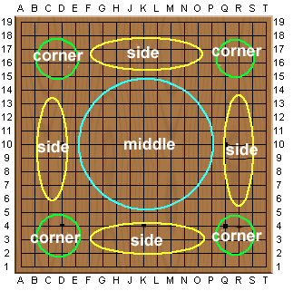
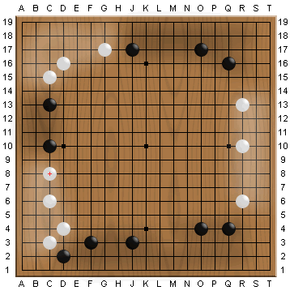

Table Of Contents
Table Of ContentsBy now you may already understand how to capture stones.
However, in the beginning of a real game, you have to play on a board with nothing
on it.
First, please take a look at the vast 19x19 board and see how we divide it into areas and how we refer to each one..

As shown above, the 4 areas near the coner of the board is called "corners"
and the area between the two corners are "sides" and the center
is "middle".
There are no distinct borders between these areas and we are just using these
names for convenience.
From which area do you want to start to move?
|
|
The object of Go is to claim as much territory as possible. In the beginning
you have to try to surround territories i.e. empty spaces.
In the figure on the left, there are two black groups: one on the upper
left corner and the one on the right side. A white group in the middle also has 9 points. These spaces completely surrounded by stones of the same color are called territories. Now, the above three groups each have a territory of 9 points. Count the number of stones needed to surround the territory.
Thus, in the beginning of a game, each side will try to claim the corners of a board. You hardly ever see plays in the middle. |
This is a real game played by two professional players.
Please observe how the game proceeds by pressing the Next button.
Only the first 20 moves will be shown.
You can see the first 4 moves are played around the 4 corners and then play
expands to the sides.
This game starts very calmly without any clashes between stones.
With the 20 moves played, what is the "balance of power" like?

The black shaded area represents where black is strong and white shaded area
is where white has bigger influence.
Therefore, all corners and sides loosely belong to either black or white.
However, it's still not definitely decided - there can be an "invasion"
at any time.
If you try to claim corners and sides just because they are easy to get, you
will probably make it harder to advance toward the middle.
And if you don't have your stones in the middle at all, it will be a big disadvantage
once a fight is started because the stones in the middle can have an influence
to every direction - which is really helpful.
These strategies in the opening game is called "Fuseki".
 Next
Next
 Home
Home